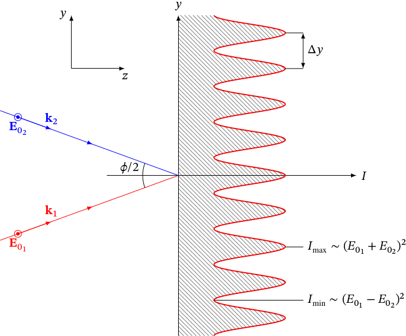
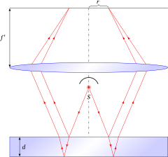
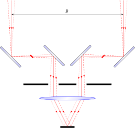
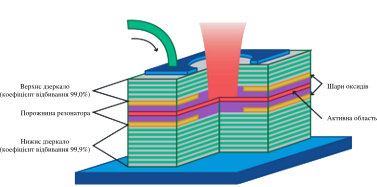
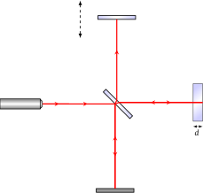
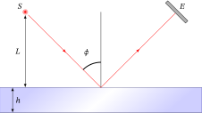
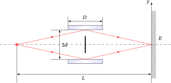

Оптика. Практичний курс
4 Інтерференція
§ 4.1 Основні поняття і закони
Інтерференція світла спостерігається при накладенні двох або більше когерентних світлових хвиль і полягає у просторовому перерозподілі енергії результуючої світлової хвилі, що супроводжується посиленням або послабленням її інтенсивності в залежності від співвідношення фаз хвиль, що складаються. При цьому виникають стійкі в часі світлі і темні ділянки, що чергуються в просторі, так звані інтерференційні смуги.
Для двопроменевої інтерференції результуюча інтенсивність дорівнюватиме:
\(\seteqnumber{0}{4.}{0}\)\begin{equation} \label {eq:Intens2} I = I_1 + I_2 + 2\sqrt {I_1I_2}\cos \delta , \end{equation}
де \(I_1\) та \(I_2\) — інтенсивності когерентних світлових хвиль, що накладаються, \(\delta \) — різниця фаз між хвилями.
В деякій точці простору буде спостерігатись максимум чи мінімум інтенсивності. Це залежить від різниці фаз:
\(\seteqnumber{0}{4.}{1}\)\begin{equation} \label {eq:InterferenceCondition} \delta = \begin{cases} 2 m \pi , & \quad \text {умова максимуму інтерференції}, \\ \left ( 2m + 1 \right ) \pi , & \quad \text {умова мінімуму інтерференції}, \end {cases} \end{equation}
де \(m \in \mathbb {Z}\), \(m \) — називають порядком інтерференції.
Різниця фаз пов’язана з різницею ходу хвиль \(\Delta \) за формулою:
\(\seteqnumber{0}{4.}{2}\)\begin{equation} \delta = k \Delta , \end{equation}
де \(k = \frac {2\pi }{\lambda } \) — хвильове число.
Умови максимуму та мінімуму інтерференції (4.2) можна переписати для різниці ходу:
\(\seteqnumber{0}{4.}{3}\)\begin{equation} \label {eq:InterferenceConditionDelta} \Delta = \begin{cases} m \lambda , & \quad \text {умова максимуму інтерференції}, \\ (2m + 1)\frac {\lambda }{2}, & \quad \text {умова мінімуму інтерференції}. \end {cases} \end{equation}
Вигляд інтерференційної картини двох ізотропних когерентних точкових джерел залежить від взаємного розташування лінії, що з’єднує джерела, і площину екрану. Якщо лінія паралельна площині екрану, то спостерігаються смуги. Якщо лінія перпендикулярна площині екрану, то спостерігається система кілець (рис. 4.1).
Інтерференційні схеми
Особливості спостереження явищ інтерференції світла від звичайних джерел світла обумовлені тим, що світло, що ними випромінюється, ніколи не буває повністю монохроматичним, а отже, когерентним 1. Таке світло можна розглядати як хаотичну послідовність окремих цугів синусоїдальних хвиль. Тривалість окремого цуга приблизно \(10^{-9}\) с. Будь-який реєструючий прилад (а також око людини) має значно більший час інтегрування сигналу. Тому при накладенні пучків світла від різних джерел фазові співвідношення між світловими коливаннями у будь-якій точці за час спостереження встигають багаторазово змінитися випадковим чином. В результаті накладання великого числа коливань з випадковими фазами у виразі (4.1) зникає інтерференційний доданок, оскільки усереднюється \(\left \langle \cos \delta \right \rangle = 0\), тобто інтерференції не спостерігається.
Звідси ясно, що для спостереження інтерференції світла необхідні спеціальні умови: світло від одного і того ж джерела потрібно розділити на два пучки (або кілька пучків) і потім звести їх відповідним чином. Якщо різниця ходу цих пучків від джерела до точки спостереження не перевищує довжини окремого цуга, то випадкові зміни амплітуди і фази світлових хвиль у двох пучках відбуваються узгоджено, тобто, зміни будуть скорельовані. Про такі пучки кажуть, що вони повністю або частково когерентні.
Інтерференція є мірою когерентності.
Проблема отримання когерентних променів від одного джерела випромінювання вирішується двома методами:
-
• методи поділу хвильового фронту;
-
• методи поділу амплітуди.
В методі поділу хвильового фронту інтерферують хвилі, що йдуть від різних ділянок хвильового фронту. На цьому методі побудовано класичні інтерференційні схеми Юнга: дзеркало Ллойда, біпризма Френеля, білінзи, бідзеркала, дослід Юнга тощо.
В методі поділу амплітуди пучок ділиться на одній або декількох пропускаючих поверхнях, що частково відбивають світло. Амплітуда кожної з інтерферуючих хвиль менша ніж амплітуда вихідної хвилі. Даний метод використовується для спостереження інтерференційної картини в тонких плівках з малими коефіцієнтами відбиття, інтерферометрі Майкельсона, інтерферометрі Фабрі-Перо.
Схема Юнга
В інтерференційному досліді Томаса Юнга 1802 р. для розділення променів від одного джерела використовувся екран з двома вузькими щілинами, які грали роль вторинних когерентних джерел світла.
Площина екрану спостереження паралельна до лінії \(\overline {S_1S_2}\), що з’єднує два джерела (рис. 4.3). Дане розташування прийнято називати схемою Юнга. Знайдемо різницю ходу \(\Delta = r_2 - r_1\) між променями, що йдуть від джерел \(S_1\) і \(S_2\) в точку \(P\) з координатою \(y\). Початок координат помістимо в точці \(O\), відносно якої джерела світла \(S_1\) і \(S_2\) розташовані симетрично. Тоді різниця ходу хвиль в точках на екрані буде визначатись формулою:
\(\seteqnumber{0}{4.}{4}\)\begin{equation} \label {eq:Delta_Young_Scheme} \Delta = y \frac {d}{L}. \end{equation}
У випадку, коли \(d \ll L \) відношення \(\frac {d}{L} = \alpha _\text {сх}\), де \(\alpha _\text {сх} \) — кут сходження променів, що інтерферують, а різниця ходу дорівнюватиме:
\(\seteqnumber{0}{4.}{5}\)\begin{equation} \label {eq:Delta_Young_Scheme'} \Delta = y\alpha _\text {сх}. \tag {4.5а} \end{equation}
Якщо \(S_1 \) і \(S_2 \) — вузькі нескінченні щілини, то інтерференційна картина на екрані являє собою смуги, паралельні щілинам.
Положення максимумів інтерференції:
\(\seteqnumber{0}{4.}{5}\)\begin{equation} y_{\max } = \frac {{mL}}{d}\lambda = m\frac \lambda {\alpha _\text {сх}}. \end{equation}
Відстань між двома сусідніми максимумами інтенсивності називається відстанню між інтерференційними смугами. З останнього виразу випливає, що відстань між сусідніми максимумами дорівнюватиме:
\(\seteqnumber{0}{4.}{6}\)\begin{equation} \label {eq:widthofmax} \Delta y = \frac {L}{d}\lambda = \frac \lambda {\alpha _\text {сх}}. \end{equation}
Встановлення скляної платівки на шляху одного з променів приводить до зміни оптичної різниці ходу променів на величину
\(\seteqnumber{0}{4.}{7}\)\begin{equation*} \Delta ' = d (n - n_0) \end{equation*}
де \(d\) і \(n\) — товщина й показник заломлення платівки; \(n_0\) — показник заломлення середовища, зазвичай повітря.
Інтерференція в платівках і в тонких плівках
Прикладом двопроменевої інтерференції за методом поділу амплітуди хвилі — є інтерференція в платівках та тонких плівках.
При цьому повна оптична різниця ходу променів, що інтерферують, для відбитого світла, та світла, що пройшло (рис. 4.4), дорівнює:
\(\seteqnumber{0}{4.}{7}\)\begin{equation} \label {eq:Delta_film} \Delta _{21} = 2d\cdot n_2\cos \epsilon '_2 + p\frac {\lambda }{2} = 2d\sqrt {n_2^2 + n_1^2\sin \epsilon _1} + p\frac {\lambda }{2}, \end{equation}
де \(d\) і \(n_2\) — товщина й показник заломлення плівки; \(\epsilon _1\), \(\epsilon '_2\) — кути падіння й заломлення; \(p\) — параметр, що враховує вплив півхвильових стрибків оптичного шляху променів при відбитті на границі від оптично більш щільного середовища; \(n_1\) — показник заломлення середовища (матеріалу), з якого падає світло.
Значення параметра р залежно від співвідношення значень \(n_1\) , \(n_2\) і \(n_3\) наведені в табл. 4.1.
Просвітлення оптичних деталей та діелектричні дзеркала
При нанесенні на поверхню лінзи з показником заломлення \(n_2\) тонкого прозорого шару діелектрика з \(n_1 < n_2\) можна досягти того, щоб хвилі певної довжини за рахунок інтерференції не відбивались від поверхні лінзи.
Показник заломлення й товщина плівок для просвітлення оптики, які наносяться на поверхні оптичних деталей, визначають виразами:
\(\seteqnumber{0}{4.}{8}\)\begin{align} n_1 & = \sqrt {n_2}, \\ d & = \frac {2m + 1}{n_1\cos \epsilon '_2}\frac {\lambda }{4}, \quad m = 0,1,2,\ldots , \end{align} де \(\lambda \) — розрахункова довжина хвилі, зазвичай відповідає середині робочого спектрального діапазону оптичного приладу.
Явище інтерференції використовується також і для отримання діелектричних дзеркал з високим коефіцієнтом відбиття, для збільшення якого, покриття виготовляють багатошаровими. На поверхню оптичного елементу наносять кілька пар шарів прозорого діелектрика, оптична товщина, кожного з яких становить \(\frac \lambda 4 \), тобто \(n_1l_1 = n_2 l_2 = \ldots = \frac \lambda 4 \), причому \(n_2 < n_1 \) (\(l_2 > l_1\)) (рис. 4.6).
При цьому, коефіцієнт відбиття для дзеркала з \(N \) пар шарів дорівнює:
\(\seteqnumber{0}{4.}{10}\)\begin{equation} R = \left [ \frac {1 - \left ( \frac {n_2}{n_1}\right )^{2N} }{1 + \left ( \frac {n_2}{n_1}\right )^{2N}} \right ]^2. \end{equation}
Багатошарові дзеркала використовуються, наприклад, в лазерних резонаторах з \(R > 0,99 \).
Інтерференція на клині
Паралельні пучки світла при падінні на клин (платівку змінної товщини) відбиваючись (або проходячи) будуть інтерферувати. В окремих місцях клина будуть спостерігатись максимуми, в залежності від товщини платівки \(d_m\) в точці падіння. На поверхні платівки буде спостерігатися картина інтерференції (рис. 4.7). Для її спостереження очі повинні бути акомодовані на поверхню платівки.
З урахуванням невеликого кута клину \(\theta \), умова максимуму інтерференції для \(m\)-ї та \(m + k\)-ї інтерференційних смуг має вигляд:
\(\seteqnumber{0}{4.}{11}\)\begin{align*} 2d_m n_2 = m\lambda , \\ 2d_{m + k}n_2 = (m + k)\lambda . \end{align*} Віднімемо друге рівняння від першого \(\Delta d = d_{m + k} - d_m \):
\(\seteqnumber{0}{4.}{11}\)\begin{equation*} \Delta d = \frac {k\lambda }{2n_2}. \end{equation*}
З геометрії рис. 4.7 \(\Delta d = l_k \sin \theta \), що при малих кутах \(\sin \theta \approx \theta \) дає \(\Delta d \approx l_k \theta \), отже
\(\seteqnumber{0}{4.}{11}\)\begin{equation} \label {eq:Klin_interference} l_k = \frac {k\lambda }{2n_2\theta }, \end{equation}
де \(k\) — число інтерференційних смуг, \(\lambda \) — довжина хвилі світла, \(l_k\) — відрізок в інтерференційній картині, в якому вкладається \(k\) смуг, \(n_2\) — показник заломлення матеріалу клина, \(\theta \) — кут при вершині клину.
Кільця Ньютона
Кільця Ньютона утворюються при інтерференції світлових хвиль, відбитих від границь тонкого прошарку між опуклою поверхнею лінзи і плоскою скляною платівкою (рис. 4.8). Спостереження ведеться у відбитому світлі. Прошарок може бути або повітряний, або заповнений рідиною з показником заломлення \(n_2\) (в загальному випадку).
Нехай на систему згори падає монохроматичний паралельний пучок променів (рис. 4.8 ). Промінь відбивається від верхнього краю платівки (промінь \(1\) на рис.), а інша частина (промінь 2) від нижнього краю лінзи.
В першому наближені, якщо знехтувати невеликим нахилом променів у прошарку, оптична різниця ходу з (4.8) дорівнює:
\(\seteqnumber{0}{4.}{12}\)\begin{equation} \Delta =2dn_2, \end{equation}
де \(d\) — товщина повітряного прошарку на відстані \(r_m\) від центру лінзи.
Якщо форма лінзи близька до сферичної з радіусом кривизни \(R \gg r_m\), то з геометричних міркувань \(r^2_m = 2Rd \). Звідки, радіуси світлих темних кілець у відбитому світлі:
\(\seteqnumber{0}{4.}{13}\)\begin{equation} \label {rdark} r_\text {тем}^2=\frac {R}{n_2}\lambda m, \quad r_\text {світ}^2=\frac {R}{n_2}(\lambda m-\lambda /2). \end{equation}
Радіуси світлих темних кілець у світлі, що пройшло:
\(\seteqnumber{0}{4.}{14}\)\begin{equation} \label {rdark2} r_\text {світ}^2=\frac {R}{n_2}(\lambda m-\lambda /2), \quad r_\text {тем}^2=\frac {R}{n_2}\lambda m. \end{equation}
Багатопроменева інтерференція
При падінні світла на прозору плоско-паралельну платівку на її поверхні відбуваються багаторазові відбивання, внаслідок чого з кожного боку платівки виходить ряд променів із спадною амплітудою, які потрібно враховувати при розгляді інтерференційної картини. Ці паралельні промені інтерферують між собою, наприклад, у фокальній площині лінзи за платівкою. Інтерференційні смуги при цьому є смугами рівного нахилу. Картина у відбитому світлі є доповнюючою до картини у світлі, що проходить. Це означає , що положення темних і світлих смуг міняються місцями.
Розглянемо плоскопаралельну прозору платівку з показником заломлення \(n_2\), що знаходиться в середовищі з показником заломлення \(n_1 = n_3\), і припустимо, що на цю платівку під кутом \(\epsilon _1\) падає плоска хвиля монохроматичного світла.
На основі закону збереження енергії можна стверджувати, що інтенсивність падаючої хвилі дорівнює сумі інтенсивності відбитої хвилі та хвилі, що пройшла \(I_0 = I_R + I_T\). Для інтенсивностей зручно ввести енергетичні коефіцієнти відбиття \(R \) та проходження \(T \), тобто \(I_R = R I_0 \), \(I_T = T I_0 \), звідки можна бачити, що \(R + T = 1\).
Знайдемо інтенсивності променів \(1'\), \(2' \), \(3'\), …, що пройшли крізь платівку:
\(\seteqnumber{0}{4.}{15}\)\begin{equation*} I_{1'}= T^2 I_0 , \quad I_{2'} = T^2R^2 I_0, \quad I_{3'} = T^2R^4 I_0 , \quad \ldots ,\quad I_{n'} = T^2R^{2n} I_0, \quad \ldots . \end{equation*}
Відповідні дійсні амплітуди \(E = \sqrt {I} \):
\(\seteqnumber{0}{4.}{15}\)\begin{equation*} E_{1'} = T E_0 , \quad E_{2'} = TR E_0, \quad E_{3'} = TR^2 E_0 , \quad \ldots , \quad E_{n'} = TR^{n} E_0, \quad \ldots . \end{equation*}
Кожний жмуток світла затримується по фазі відносно попереднього на величину:
\(\seteqnumber{0}{4.}{15}\)\begin{equation} \label {eq:delta_manyrays} \delta = \frac {2\pi }\lambda \cdot 2dn_2\cos \epsilon '_2. \end{equation}
де \(d \) — відстань між площинами інтерферометра, що відбивають. З урахуванням фазової затримки амплітуда результуючого коливання для хвилі, що пройшла, описується геометричною прогресією:
\(\seteqnumber{0}{4.}{16}\)\begin{equation*} E = E_0(1-R)(1 + R e^{-i\delta } + R^2 e^{-2i\delta } + R^3 e^{-3i\delta } + \ldots ) = \frac {E_0(1-R)}{1 - R e^{-i\delta }}. \end{equation*}
Так як інтенсивність \(I \sim EE^*\). Отже, для інтенсивності світла, що пройшло, маємо:
\(\seteqnumber{0}{4.}{16}\)\begin{equation} \label {eq:I_traversed} I_T = \frac {E_0^2 (1-R)^2}{(1 - R e^{-i\delta })(1 - R e^{+i\delta })} = I_0 \frac {(1-R)^2}{(1-R)^2 + 4R\sin ^2\left ( \frac {\delta }{2}\right ) }. \end{equation}
де \(I_0\) — інтенсивність падаючого світла.
Для отримання інтенсивності світла, що відбилось, можна скористатись законом збереження \(I_R = I_0 - I_R\).
Умова інтерференційних максимумів для світла, що пройшло :
\(\seteqnumber{0}{4.}{17}\)\begin{equation} \label {eq:delta=max_manyrays} \delta = 2m\pi ,\quad \text {або}\quad 2 dn_2\cos \epsilon '_2 = m\lambda , \end{equation}
при цьому \(I_{\max } = I_0\).
Умова інтерференційних мінімумів:
\(\seteqnumber{0}{4.}{18}\)\begin{equation} \delta = (2m+1)\pi ,\quad \text {або}\quad 2 dn_2\cos \epsilon '_2 = \left (m + \frac 12\right )\lambda , \end{equation}
при цьому інтенсивність в мінімумі дорівнює:
\(\seteqnumber{0}{4.}{19}\)\begin{equation} \label {eq:manyrays_I} I_{\min } = I_0 \left ( \frac {1-R}{1+R} \right )^2, \end{equation}
якщо коефіцієнт відбивання \(R \approx 1\) близький до одиниці, то \(I_{\min } \approx 0\).
За умови \((1-R)^2 + 4R\sin ^2\left ( \frac \delta 2\right ) = 2(1-R)^2\) з формули (4.17) випливає, що інтенсивність світла дорівнює половині максимальної, тобто \(I = \frac 12 I_0\). Звідки різниця фаз, за якої виконується ця умова, дорівнює:
\(\seteqnumber{0}{4.}{20}\)\begin{equation} \label {eq:manyrays_I_ddelta} \delta = 2\pi m + \arcsin \frac {1-R}{\pi \sqrt {R}}. \end{equation}
якщо коефіцієнт відбивання \(R \approx 1\), то \(\arcsin \frac {1-R}{\pi \sqrt {R}} \approx \frac {1-R}{\pi \sqrt {R}} \) і \(\delta = 2\pi m + \frac {1-R}{\pi \sqrt {R}}\). Очевидно, при малих \(R \) інтерференційні смуги широкі, різкість інтерференційної картини низька. При збільшенні \(R \) смуги звужуються, а різкість зростає (рис. 4.10)
Явище багатопроменевої інтерференції використовується в в спектроскопії: в інтерферометрі Фабрі-Перо (еталон Фабрі-Перо), платівці Люмера-Герке.
Часова когерентність
Для оцінки контрастності інтерференційної картини в деякій точці інтерференційного поля вводять параметр видності \(V\):
\(\seteqnumber{0}{4.}{21}\)\begin{equation} \label {eq:vis_par} V = \frac {I_{\max } - I_{\min }}{I_{\max } + I_{\min }}, \end{equation}
де \(I_{\max }\), \(I_{\min }\) — максимальна та мінімальна інтенсивність світла (освітлення інтерференційних смуг) поблизу обраної точки поля. Видність \(V\) може змінюватися від \(0\) до \(1\). Значення \(1\) відповідає найбільш контрастній інтерференційній картині, \(0\) — повному її зникненню.
Збільшення ширини спектра випромінювання інтерферуючого світла призводить до погіршення видності інтерференційної картини. Якщо ширина спектрального інтервалу становить \(\Delta \lambda \), то при спостереженні інтерференції за допомогою схеми Юнга максимум \(m + 1\)-го порядку для довжини хвилі \(\lambda \) може співпасти з максимумом \(m\)-го порядку для довжини хвилі \(\lambda + \Delta \lambda \). При цьому різниця ходу хвиль однакова:
\(\seteqnumber{0}{4.}{22}\)\begin{equation} m (\lambda + \Delta \lambda ) = (m + 1)\lambda , \end{equation}
звідки максимальний порядок, при якому буде спостерігатись така умова
\(\seteqnumber{0}{4.}{23}\)\begin{equation*} \label {eq:max_interf_resol} m_{\max } = \frac {\lambda }{\Delta \lambda } . \end{equation*}
Ця формула дає оцінку максимально можливого порядку інтерференції для квазімонохроматичного світла.
Пов’язавши порядок інтерференції із різницею ходу променів що інтерферують (4.4) (\(\Delta = m\lambda \)), отримаємо:
\(\seteqnumber{0}{4.}{23}\)\begin{equation} \label {eq:coherence_length} \Delta _{\max } = m_{\max }\lambda = \frac {\lambda ^2}{\Delta \lambda } = \ell _\text {ког}. \end{equation}
Величина \(\ell _\text {ког} \) називається довжиною когерентності.
Як було зазначено вище, атоми випромінюють світло протягом певного проміжку часу \(\tau _\text {ког}\), який називається часом когерентності. При цьому випромінюється цуг довжиною \(\ell \) (рис. 4.11):
\(\seteqnumber{0}{4.}{24}\)\begin{equation} \label {eq:cug_length} \ell = c\tau _\text {ког}. \end{equation}
Довжина когерентності дорівнює довжині цуга: \(\ell _\text {ког} = \ell \). Дійсно, якщо різниця ходу променів, що інтерферують, виявиться більшою довжини цуга, то такі промені інтерферувати не будуть (вони перестають бути когерентними). Отже, довжина когерентності \(\ell _\text {ког} \) та довжина цуга хвиль \(\ell \) мають дорівнювати одна одній. Отже, прирівнюючи (4.24) до (4.25), отримаємо:
\(\seteqnumber{0}{4.}{25}\)\begin{equation*} \frac {\lambda ^2}{\Delta \lambda } = c\tau _\text {ког}. \end{equation*}
Використовуючи відомі співвідношення (\(\nu = \frac {c}{\lambda }\), \(\delta \nu = \frac {c\delta \lambda }{\lambda ^2}\)), отримаємо зв’язок:
\(\seteqnumber{0}{4.}{25}\)\begin{equation*} \delta \nu \cdot \tau _\text {ког} = 1, \end{equation*}
тобто, немонохроматичність та час когерентності випромінювання взаємообумовлені.
Просторова когерентність
Окрім немонохроматичності, на видність інтерференційної картини впливають розміри джерел.
Розглянемо утворення інтерференційної картини на екрані методом поділу хвильового фронту від протяжного монохроматичного джерела \(S \), яке має лінійний розмір \(b \). Фронт ділиться за допомогою отворів \(S_1 \) та \(S_2 \), які розташовані на відстані \(D \) один від одного. Інтерференційну картину на екрані (рис. 4.12) можна розглядати як накладення інтерференційних картин від нескінченної кількості точкових джерел, на які можна уявно розділити поверхню джерела \(S \) (на рис. 4.12, для прикладу, наведено промені від двох точок). Оскільки хвилі від цих точок приходитимуть з різними значеннями різниці ходу, то інтерференційні картини будуть зміщеними одна відносно одної і, накладаючись, призведуть до погіршення видності інтерференції.
Сумарна інтенсивність на екрані (від усіх точок джерела \(S \)) буде визначатися за формулою (див. задачу 4.31):
\(\seteqnumber{0}{4.}{25}\)\begin{equation} \label {eq:I_space_coherence} I = 2I_0\left [ 1 + \mathrm {sinc}\left ( \frac {\pi bD}{\lambda L_1}\right ) \cos \left ( \frac {2\pi yD}{\lambda L_2}\right ) \right ]. \end{equation}
Графік функції (4.26) зображений на рис. 4.13а.
Використовуючи означення (4.22) з (4.26) можна розрахувати видність як функцію розмірів джерела:
\(\seteqnumber{0}{4.}{26}\)\begin{equation} \label {eq:V_space_coherence} V(b) = \left |\mathrm {sinc}\left ( \frac {\pi bD}{\lambda L_1}\right ) \right | = \left |\mathrm {sinc}\left ( \frac {\pi b \Omega }{\lambda }\right ) \right |, \end{equation}
де \(\Omega \) — апертура інтерференції (кут між крайніми інтерферуючими променями). Остання рівність була записана з урахуванням малих апертур \(L_1\Omega \approx D \), однак вона застосовна і в загальному випадку.
Графік \(V(b) \) показано на рис. 4.13б. Можна бачити, що збільшення розмірів джерела світла \(b \) призводить до погіршення контрастності інтерференційних смуг, а при деякому значенні \(b_{\max } \) до їх повного зникнення. Значення \(b_{\max } \) можна визначити, поклавши в (4.27) \(V = 0 \):
\(\seteqnumber{0}{4.}{27}\)\begin{equation} \label {eq:b_max} b_{\max } = \frac {\lambda }{\Omega }. \end{equation}
На графіку 4.13а, при \(b \to b_{\max } \), \(\frac {I_{\min }}{I_0}, \frac {I_{\max }}{I_0} \to 2 \), а \(I(y) \to 2I_0 = \mathrm {const} \), тобто інтенсивність на екрані у всіх точках стає однаковою.
Отже, з умови першого зникнення інтерференційної картини при \(V=0 \), використовуючи (4.27), встановлюють максимально допустимий розмір протяжного джерела випромінювання \(b \le b_{\max } \) (при \(b > b_{\max } \) приймають \(V \approx 0 \)). Тоді, граничні умови просторової когерентності записуються як
\(\seteqnumber{0}{4.}{28}\)\begin{equation} \label {eq:visibility_condition_b} b \cdot \Omega \le \lambda , \end{equation}
або, враховуючи, що \(L_1 \omega \approx b \) та \(L_1\Omega \approx D \):
\(\seteqnumber{0}{4.}{29}\)\begin{equation} \label {eq:visibility_condition_D} D \cdot \omega \le \lambda , \tag {4.29$\prime $} \end{equation}
де \(\omega \) — кутовий розмір джерела світла.
Тобто, при заданому розмірі \(b \) джерела, з (4.29\(\prime \)) можна визначити максимальну відстань між щілинами \(S_1 \) та \(S_2 \) при якій інтерференційна картина буде видимою:
\(\seteqnumber{0}{4.}{29}\)\begin{equation} \label {eq:d_coherence} D_{\max } = \frac {\lambda L_1}{b} = \frac {\lambda }{\omega }, \end{equation}
де \(D_{\max } \) називається діаметром когерентності.
Іноді, користуються іншим критерієм — так званою умовою достатньої видності:
\(\seteqnumber{0}{4.}{30}\)\begin{equation} \label {eq:good_vis} b\sin \frac \Omega 2 \le \frac {\lambda }{4}. \end{equation}
§ 4.2 Приклади розв’язку задач
Приклад 22. Напрямки поширення двох плоских хвиль однієї й тої ж довжини \(\lambda \) становлять кут \(\phi /2\) з нормаллю до площини екрана, на якому спостерігаються інтерференційні смуги (див. рис.). Показати, що при малих \(\phi \) відстань \(\Delta y\) між сусідніми інтерференційними смугами \(\Delta y \approx \lambda /\phi \).
Розв’язок.

Рівняння 1-ї та 2-ї плоских хвиль:
\(\seteqnumber{0}{4.}{31}\)\begin{align*} \vect {E}_1 & = \vect {E}_{0_1} e^{i(\omega t - k_zz + k_yy)} = \vect {E}_{0_1} e^{i(\omega t - k_zz)} e^{ik_yy}, \\ \vect {E}_2 & = \vect {E}_{0_2} e^{i(\omega t - k_zz - k_yy)} = \vect {E}_{0_2} e^{i(\omega t - k_zz)} e^{-ik_yy}. \end{align*}
Результат інтерференції спостерігається на екрані \(z = 0\). Інтенсивність світла в точках на екрані \(I \sim |\vect {E}_1 + \vect {E}_2|^2\):
\(\seteqnumber{0}{4.}{31}\)\begin{equation} \label {eq_interference:I} I \sim \Re \left ((\vect {E}_1 + \vect {E}_2)\cdot (\vect {E}^*_1 + \vect {E}^*_2)\right ) = E_{0_1}^2 + E_{0_2}^2 + 2 E_{0_1} E_{0_2} \cos (2k_yy), \end{equation}
де \(\vect {E}^*_1\) та \(\vect {E}^*_2\) — комплексно-спряжені величини.
Врахуємо, що \(k_y = k\sin \frac \phi 2\), і при малих кутах \(\sin \frac \phi 2 \approx \frac \phi 2\), формула (4.32) дає вирах:
\(\seteqnumber{0}{4.}{32}\)\begin{equation} I = I_1 + I_2 + 2\sqrt {I_1I_2}\cos k\phi y, \end{equation}
де \(I_{1,2} \sim |\vect {E}_{0_{1,2}}|\), відповідно.
Результат інтерференції залежить від \(\cos k \phi y\). Максимум спостерігатиметься при \(\cos k \phi y = 1\). Звідки можна знайти координати максимумів
\(\seteqnumber{0}{4.}{33}\)\begin{equation*} k \phi y = 2\pi m. \end{equation*}
Враховуючи, що \(k = \frac {2\pi }{\lambda }\), відстань між сусідніми максимумами \(\Delta y = y_{m + 1} - y_m\):
\(\seteqnumber{0}{4.}{33}\)\begin{equation*} \Delta y = \frac {\lambda }{\phi } \end{equation*}
Чим менше кут сходження \(\phi \) хвиль, що інтерферують, тим видніша інтерференційна картина. Так, для того, щоб \(\Delta y \) мм при \(\lambda = 0,5 \) мкм, необхідно, щоб \(\phi \approx 5 \cdot 10^{-3}\) рад.
Приклад 23. Паралельний пучок білого світла падає під кутом \(45^\circ \) на водяну плівку (\(n_2 = 1,33\)), розлиту на поверхні скла (\(n_3 = 1,61\)). Знайти а) при якій мінімальній товщині плівки відбите світло забарвиться в червоний колір (\(\lambda = 700\) нм); б) у який колір забарвиться при цьому світло, що проходить.
Розв’язок.
а) Скористаємося формулою повної оптичної різниці ходу променів, що інтерферують (4.8). При співвідношенні \(n_1 < n_2 < n_3\) з таблиці табл. 4.1 знаходимо значення параметра \(p = 0\) у відбитому світлі.
Для інтерференційного посилення червоного кольору повинна виконуватися умова максимуму:
\(\seteqnumber{0}{4.}{33}\)\begin{equation*} \Delta _{21} = 2d\sqrt {n_2^2 + n_1^2\sin \epsilon _1} = m\lambda _1, \end{equation*}
звідки
\(\seteqnumber{0}{4.}{33}\)\begin{equation*} d = \frac {m}{\sqrt {n_2^2 + n_1^2\sin \epsilon _1}}\frac {\lambda _1}{2}. \end{equation*}
Мінімальна товщина плівки при \(m = 1\):
\(\seteqnumber{0}{4.}{33}\)\begin{equation*} d_{\min } = \frac {1}{\sqrt {n_2^2 + n_1^2\sin \epsilon _1}}\frac {\lambda _1}{2} = 310,7\ \text {нм}. \end{equation*}
б) При \(n_1 < n_2 < n_3\) у відбитому світлі з таблиці табл. 4.1 знаходимо значення параметра \(p = +1\). Використовуючи умову максимуму:
\(\seteqnumber{0}{4.}{33}\)\begin{equation*} \Delta _{2'1'} = 2d\sqrt {n_2^2 + n_1^2\sin \epsilon _1} + \frac \lambda 2= m\lambda _2, \end{equation*}
звідки
\(\seteqnumber{0}{4.}{33}\)\begin{equation*} \lambda _2 = \frac {4d}{2m-1}\sqrt {n_2^2 + n_1^2\sin \epsilon _1}. \end{equation*}
З послідовності значень \(\lambda _2\) при різних \(m\) вибираємо те, що при \(d_{\min } \) належить видимому діапазону спектра (\(m = +1\)):
\(\seteqnumber{0}{4.}{33}\)\begin{equation*} \lambda _2 = 466,6\ \text {нм}, \end{equation*}
Тобто, світло, яке проходить, забарвлюється в синій колір.
Приклад 24. Інтерференційні смуги рівного нахилу у фокальній площині лінзи одержують при відбитті від плоскопаралельної платівки, яка освітлюється монохроматичним джерелом світла \(S\) (див. рис.). Пряме світло джерела на лінзу не потрапляє. Довжина світлової хвилі \(\lambda = 6000\) 0.25A, товщина платівки \(d = l,6\) мм; показник заломлення \(n = 1,5\); фокусна відстань лінзи \(f = 40\) см. а) Знайти радіус першого видимого на екрані \(E\) темного інтерференційного кільця, якщо центр кілець темний. б) Яка максимально допустима спектральна ширина \(\Delta \lambda \) світла від джерела \(S\), при якій за даних параметрів схеми можна спостерігати інтерференційні кільця?

Розв’язок.
а) Різниця ходу між променями, що відбилися від передньої й задньої поверхонь платівки, дорівнює \(2dn\cos \epsilon '_2 + \frac \lambda 2\).
Оскільки центр кілець темний, то ця величина повинна містити непарне число напівхвиль. Першому темному кільцю відповідає таке збільшення кута заломлення \(\epsilon '_2\), що різниця ходу зменшується на \(\lambda \).
Це дає \(2dn(1-\cos \epsilon '_2) = \lambda \), або \(4dn\sin ^2\epsilon '_2/2 = \lambda \).
Для малих кутів \(dn\epsilon ^{\prime 2}_2 = \lambda \). Малі кути падіння й заломлення пов’язані співвідношенням \(\epsilon _1 = n\epsilon '_2\).
Для радіуса першого темного кільця одержуємо
\(\seteqnumber{0}{4.}{33}\)\begin{equation*} r_1 = f\epsilon _1 = fn\epsilon '_2 = f\sqrt {\frac {n\lambda }{d}} = 9,5\ \text {мм}. \end{equation*}
б) Максимально допустима спектральна ширина \(\Delta \lambda \) визначається максимальною різницею ходу між інтерферуючими променями:
\(\seteqnumber{0}{4.}{33}\)\begin{equation*} \Delta _{\max } = 2dn \le \frac {\lambda ^2}{\Delta \lambda }, \end{equation*}
звідки
\(\seteqnumber{0}{4.}{33}\)\begin{equation*} \Delta \lambda = \frac {\lambda ^2}{2dn} = 0,75\ \text {\AA }. \end{equation*}
Приклад 25. Кільця Ньютона спостерігаються в монохроматичному світлі. Між платівкою і лінзою повітря. Радіуси сусідніх темних кілець рівні відповідно \(4,0\) і \(4,38\) мм. Радіус кривизни лінзи дорівнює \(6,4\) м. Знайти довжину хвилі світла й порядкові номери кілець, якщо в центрі їх спостерігається темна пляма.
Розв’язок.
Розглянемо схему, зображену на рис. 4.8. Оскільки в центрі кілець є темна пляма, спостереження ведеться у відбитому світлі. Скористаємося формулою для радіуса темних кілець у відбитому світлі (4.14). Визначимо довжину хвилі світла, використовуючи вираз радіусів двох сусідніх кілець:
\(\seteqnumber{0}{4.}{33}\)\begin{equation*} r^2_{\text {тем }_m} = \frac {R}{n_2}\lambda m, \quad r^2_{\text {тем }_{m + 1}}=\frac {R}{n_2}\lambda (m + 1), \end{equation*}
звідки
\(\seteqnumber{0}{4.}{33}\)\begin{equation*} \lambda = \frac {n_2}{R} \left ( r^2_{\text {тем }_{m + 1}} - r^2_{\text {тем }_m} \right ), \end{equation*}
Оскільки \(n_2 = 1\), \(\lambda = 0,5\) мкм.
Визначимо номери кілець із формули (4.14):
\(\seteqnumber{0}{4.}{33}\)\begin{equation*} m = \frac {r^2_{\text {тем }_m}}{R\lambda }n_2. \end{equation*}
Підставляючи данні умови, отримаємо \(m = 6\), \(m + 1 = 7\).
Приклад 26. Вертикальна мильна плівка (\(n_2 = 1,33\)), що утворює клин внаслідок стікання рідини, освітлюється нормально падаючим білим світлом. При спостереженні інтерференційної картини у відбитому світлі через зелений світлофільтр (\(5461\) 0.25A) виміряна відстань між п’ятьома смугами склала \(2,0\) см. а) Визначити кут клина в кутових секундах. б) Як зміниться ширина інтерференційної смуги \(\Delta y\), якщо спостереження вести через червоний світлофільтр (\(7200\) 0.25A)?
Розв’язок.
Мильна плівка при стіканні рідини під дією гравітації представляє собою клин, який потовщується згори до низу, а тому виникнення інтерференційних смуг в мильній плівці можна моделювати інтерференцією на клині і використовувати формулу (4.12).
а) Кут клина визначаємо з формули (4.12):
\(\seteqnumber{0}{4.}{33}\)\begin{equation*} \theta = \frac {k\lambda }{2l_kn_2} = 5,13\cdot 10^{-5}\ \text {рад} = 10,57''. \end{equation*}
б) При \(k = 1\), \(l_k = \Delta y\) і формула (4.12) набуває вигляду:
\(\seteqnumber{0}{4.}{33}\)\begin{equation*} \lambda = 2\Delta y n_2\theta , \end{equation*}
звідси
\(\seteqnumber{0}{4.}{33}\)\begin{equation*} \frac {\Delta y_\text {черв}}{\Delta y_\text {зел}} = \frac {\lambda _\text {черв}}{\lambda _\text {зел}} = 1,32. \end{equation*}
Приклад 27. Зоряний інтерферометр Майкельсона складається з двох розташованих під кутом дзеркал, розділених довгою базою \(B\) (див. рис.). Дзеркала направляють світло від далекої зірки в точку, розташовану точно посередині між ними, де виникає інтерференційна картина на даній довжині хвилі. Поясніть, як саме визначають діаметри зірок, якщо відстані до них відомі. Знайдіть мінімальне значення бази, якщо найбільший кутовий розмір зірки \(\omega = 10^{-8}\).

Розв’язок.
Для спостереження інтерференційної картини від зірки деякого кутового розміру \(\omega \) відстань \(B\) між дзеркалами бази інтерферометра має дорівнювати, або бути меншою за діаметр когерентності, який визначається з (4.30), тобто \(B \le D_{\max } \).
Для визначення розміру зірки базу збільшують до зникнення когерентності (до зникнення інтерференційної картини), тобто до \(B \approx D_{\max } \):
\(\seteqnumber{0}{4.}{33}\)\begin{equation*} B = \frac {\lambda }{\omega } = \frac {0,5\ \text {мкм}}{10^{-8}\ \text {рад}} = 50 \ \text {м}. \end{equation*}
Якщо кутовий розмір даної зірки максимальний, то з іншими зірками потрібно працювати на більшій базі.
Примітка: За допомогою зоряного інтерферометра виміряно кутовий розмір зорі Бетельгейзе (\(\alpha \) Оріона), який склав \(0,047''\).
§ 4.3 Задачі для самостійного розв’язку
-
4.8. Однолінзовий об’єктив оптоелектронного перетворювача працює в спектральному діапазоні \(0,9 \ldots 1,3\) мкм. Показник заломлення скла марки ЛК6, з якого зроблена лінза, у середині робочого діапазону дорівнює \(1,461\). Визначити: а) параметри покриття для просвітлення; б) коефіцієнт пропускання об’єктива до й після просвітління; в) ступінь зменшення втрат на відбиття. [відповідь]
-
4.9. В напівпровідникових лазерах з вертикальним резонатором, застосовують брегівські дзеркала, які виготовляють в одному технологічному циклі епітаксійного вирощування лазерного чипа (див. рис.). Розрахувати повну товщину та коефіцієнт відбивання для довжини хвилі випромінювання \(1 \) мкм для верхнього дзеркала такого лазера, виготовленого з \(20 \)-ти пар шарів , показники заломлення для яких відповідно дорівнюють \(n_1= 3,3 \) та \(n_2=2,9 \).

-
4.10. Лінза виготовлена із скла марки ТК 23 (\(n_2 = 1,6 \)) (важкий крон), яка працює у видимому діапазоні спектру. Визначте показник заломлення і найменшу товщину одношарового покриття для просвітлення цієї лінзи, взявши середню довжину хвилі для видимого діапазону рівною \(0,55 \) мкм. Порівняйте пропускання лінзи до і після просвітлення. У скільки разів знизяться при цьому втрати на відбиття? [відповідь]
-
4.11. Складаються дві монохроматичні хвилі жовтогарячого кольору (\(\lambda = 0,6\) мкм), що йдуть в одному напрямку. Параметри хвиль у точці додавання: \(E_{0_1} = 4\) В/м; \(E_{0_2} = 3\) В/м; \(\phi _1 = 0\); \(\phi _2 = \pi /2\). Визначити параметри результуючої хвилі, записати вираз для її світлового вектора, побудувати векторну діаграму складання амплітуд. [відповідь]
-
4.12. Визначити амплітуду й інтенсивність результуючої світлової хвилі, отриманої в результаті додавання однаково напрямлених світлових когерентних хвиль: \(E_m = E_{0_1}\cos (\omega t - (m - 1) \delta )\), де \(E_{0_1}\) — амплітуда хвиль, що складаються; \(m\) — номер хвилі, що складається; \(\delta \) — різниця фаз між сусідніми доданками. Розглянути два випадки: а) \(m = 1, 2, 3, \ldots , N\); б) \(m = 1, 2, 3, \ldots \). [відповідь]
-
4.13. У схемі біпризми Френеля відстань між уявними зображеннями джерела світла дорівнює \(0,5\) мм, відстань до екрана \(5\) м. У зеленому світлі ширина інтерференційних смуг виявилася рівна \(5\) мм. Знайти довжину хвилі зеленого кольору. [відповідь]
-
4.14. Інтерферометр Релея освітлюють монохроматичним світлом з довжиною хвилі \(589\) нм. На шляху обох променів інтерферометра поставлені прозорі кювети довжиною \(0,02\) м. Після заміни в одній з них повітря хлором інтерференційна картина змістилася на \(20\) смуг. Визначити показник заломлення хлору, якщо для повітря він дорівнює \(1,000276\). [відповідь]
-
4.15. На мильну плівку (\(n = 1,33\)) падає біле світло під кутом \(45^\circ \). а) При якій найменшій товщині плівки відбиті промені, будуть пофарбовані в жовтий (\(600\) нм), фіолетовий (\(420\) нм) колір? б) Як зміниться товщина плівки, якщо її помістити між двома скельцями? [відповідь]
-
4.16. Пучок паралельних променів (\(\lambda = 0,6\) мкм) падає під кутом \(30^\circ \) на мильну плівку (\(n = 1,33 \)). При якій найменшій товщині плівки: а) відбиті промені будуть максимально ослаблені, максимально підсилені інтерференцією? б) те ж саме, для променів, що проходять. [відповідь]
-
4.17. Кільця Ньютона утворюються між лінзою з радіусом кривизни \(8,6 \) м і платівкою при освітленні нормально падаючим пучком монохроматичного світла. Вимірами встановлено, що діаметр четвертого темного кільця дорівнює \(9 \) мм. Визначити довжину хвилі світла, якщо центр кілець: а) темний; б) світлий. [відповідь]
-
4.18. Знайти відстань між третім і шістнадцятим кільцями Ньютона, якщо відстань між другими й двадцятим темними кільцями дорівнює \(4,8 \) мм. Центр кілець — темний. [відповідь]
-
4.19. Установка для спостереження кілець Ньютона у відбитому світлі освітлюється монохроматичним світлом. Після того як простір між лінзою й скляною платівкою заповнили рідиною, радіуси темних кілець зменшилися в \(1,25 \) рази. Визначити показник заломлення рідини. [відповідь]
-
4.20. В одне із плечей інтерферометра Майкельсона, освітлюваного монохроматичним світлом (\(589 \) нм), поміщена кювету з робочою довжиною \(14 \) см. Після заповнення кювети аміаком інтерференційна картина змістилася в поле зорової труби на \(180 \) смуг. Визначити показник заломлення аміаку.
Вказівка: урахувати подвійне проходження кювети променем. [відповідь]
-
4.21. Кільця Ньютона отримуються за допомогою плоскоопуклої лінзи з радіусом кривизни \(R_1 \), покладеної на ввігнуту сферичну поверхню пробного скла з радіусом кривизни \(R_2 > R_1 \). Освітлення монохроматичне з довжиною хвилі \(\lambda \), кільця спостерігаються у відбитому світла. Визначити радіус \(m \)-го кільця: а) світлого; б) темного. [відповідь]
-
4.23. Скляний клин (\(n = 1,55 \)) з кутом при вершині \(2' \) освітлюється нормально падаючим монохроматичним світлом. Визначити довжину хвилі світла, якщо спостережувані інтерференційні смуги мають ширину \(0,3 \) мм. [відповідь]
-
4.24. На скляний клин з кутом при вершині \(20'' \) нормально падає монохроматичне світло (\(0,582 \) мкм). У спостережуваній інтерференційній картині в \(1 \) см укладається п’ять смуг. Визначити показник заломлення скла. [відповідь]
-
4.25. Знайти різницю довжин хвиль \(D\)-ліній , якщо відомо, що різкість інтерференційної картини, спостережуваної в інтерферометрі із двома променями, мінімальна в \(490 \)-й, \(1470 \)-й і т. д., а максимальна в \(1 \)-й, \(980 \)-й і т. д. смуг. Середня довжина хвилі \(D\)-Ліній \(\lambda = 5893\) 0.25A. [відповідь]
-
4.26. Інтерференційні смуги рівного нахилу у фокальній площині лінзи одержують при відбитті від плоскопараллельної платівки, яка освітлюється монохроматичним джерелом світла \(S\), розміщеним посередині між лінзою і платівкою на відстані \(f\) від лінзи. Пряме світло джерела на лінзу не потрапляє. Довжина світлової хвилі \(\lambda = 6000 \) 0.25A, товщина платівки \(d = l,6 \) мм; показник заломлення \(n = 1,5 \); фокусна відстань лінзи \(f = 40 \) см, діаметр лінзи \(D = 8 \) см. Скільки темних кілець можна спостерігати на екрані? [відповідь]
-
4.27. Якою має бути мінімальна товщина платівки в попередній задачі, щоб можна було отримати принаймні одне темне кільце? [відповідь]
-
4.28. З лінзи з фокусною відстанню \(f = 50 \) см вирізали центральну частину шириною \(a \). Обидві половини зсунули впритул. З одного боку лінзи розташували точкове джерело монохроматичного світла з довжиною хвилі \(\lambda =6000 \) 0.25A. З іншого боку лінзи розташували екран, на якому спостерігають інтерференційні смуги, відстань між сусідніми світлими смугами \(\Delta x = 0,5 \) мм і не змінюється при пересуванні екрана вздовж оптичної осі. Знайти \(a\). [відповідь]
-
4.29. Знайти відносний зсув \(\Delta l/ l \) інтерференційних смуг, отриманих за допомогою платівки Люмера-Герке, при зміні температури на 1°C. Товщина платіки \(h = 2 \) см, показник заломлення \(n = 1,5 \), температурний коефіцієнт лінійного розширення скла \(a = 8,5\cdot 10^{-6} \) К\(^{-1}\), довжина хвилі світла \(\lambda = 500 \) нм. Залежністю показника заломлення від температури знехтувати [відповідь]
-
4.30. В одне із плечей інтерферометра Майкельсона замість відбиваючого дзеркала поміщена непоглинаюча платівка з напівпрозорою передньою й дзеркальною задньою стінкою (рис.). Товщина платівки \(d = 2 \) мм, показник заломлення \(n = 5 \), спектр падаючого випромінювання простирається від \(0 \) до \(110 \) ГГц. При переміщенні дзеркала в другому плечі детектор реєструє ряд піків інтенсивності випромінювання. Яка відстань між піками в одиницях довжини переміщення дзеркала?

Вказівка: Врахувати довжину когерентності. [відповідь]
-
4.31. Визначити видність \(V\) інтерференційної картини в експерименті Юнга при використанні джерела світла, розмірами якого \(b \) неможливо знехтувати. Відстань від джерела до екрану з щілинами \(L \), відстань між щілинами \(d \). Середня довжина хвиль \(\lambda \). [відповідь]
-
4.32. На екран з двома вузькими паралельними щілинами падає світло променів Сонця. При якій відстані \(D \) між щілинами можуть спостерігатися інтеференційні смуги за екраном? Кутовий діаметр Сонця \(\alpha \approx 0.01 \) рад. [відповідь]
-
4.33. Зображення Сонця отримане за допомогою лінзи з фокусною відстанню \(f = 50 \) мм на отворі екрану (розмір отвору дорівнює величині зображення). За екраном розміщені дві вузькі паралельні щілини на відстані \(D = 1 \) мм один від одного. При якій відстані \(l \) між екраном та щілинами можуть спостерігатисяінтерференційні смуги? Кутовий діаметр Сонця \(\alpha \approx 0.01 \) рад. [відповідь]
-
4.34. Джерело світла \(S \) розташоване на відстані \(L = 1 \) м від тонкої слюдяної платівки завтовшки \(h = 0,1 \) мм з показником заломлення \(n = 1,4 \) (див. рис.). На такій же відстані від платівки розташовано невеликий екран \(E \), орієнтований перпендикулярно відбитим променям, на якому спостерігаються інтенференційні смуги. Кут \(\phi = 60^\circ \) Знайти порядок \(m \) інтерференційної смуги в центрі екрана і ширину \(\Delta l \) інтенференційних смуг. Оцінити допустимий розмір \(b \) і допустиму немонохроматичність \(\Delta \lambda \) джерела, при якій ще буде помітним контраст інтерференційної картини.

Використовується світло з довжиною хвилі \(\lambda = 560 \) нм. [відповідь]
-
4.35. За допомогою зорової труби, встановленої на нескінченність, спостерігають інтерференційні смуги в тонкій плоскопаралельній скляній платівці завтовшки \(h=0,2 \) мм з показником заломлення \(n = 1,41 \), при цьому кут спостереження � може змінюватись від \(0 \) до \(90^\circ \) (див. рис.). Знайти максимальний \(m_{\max } \) і мінімальний \(m_{\min } \) порядок інтерференційних смуг. Оцінити допустиму немонохроматичність \(\Delta \lambda \) джерела, за якої будуть достатньо чітко спостерігатись всі інтерференційні смуги. Який допустимий розмір джерела світла в цьому інтерференційному досліді?
Використовується світло з довжиною хвилі \(\lambda = 560 \) нм. [відповідь]
-
4.36. В інтерференційній схемі (рис.) використовується квазімонохроматичне джерело світла \(S \) (\(\lambda = 5\cdot 10^{-5} \) см). Відбиваючі дзеркала розташовані симетрично відносно джерела \(S \) і екрана \(E \), на якому спостерігається інтерференція. Знайти: 1) ширину інтерференційної смуги \(\Delta x \) на екрані \(E \); 2) область локалізації смуг на екрані; 3) максимальний і мінімальний порядок інтерференції й число спостережуваних смуг, 4) ступінь монохроматичности інтерференційних смуг. Оцінити допустиму немонохроматичність , при якій число спостережуваних смуг максимально; 5) припустимий розмір джерела \(b \). Параметри схеми: \(L = 1 \) м, \(2d = 2,5 \) см, \(D = 10 \) см.

-
4.37. Паралельний пучок світла від далеко розташованого джерела з довжиною хвилі \(\lambda = 500 \) нм падає на біпризму із заломлюючим кутом \(\theta = 10^{-2} \) рад і шириною \(D = 2 \) см, виконану зі скла з показником заломлення \(n = 1,5 \) (рис.). Визначити 1) на якій відстані \(L \) від біпризми потрібно розташувати екран, щоб на ньому можна було спостерігати максимально можливе число інтерференційних смуг; 2) оцінити припустиму немонохроматичність \(\Delta \lambda \) світла, необхідну для спостереження всіх смуг. 3) Оцінити припустимий кутовий розмір \(\psi \) джерела в цьому інтерференційному досліді.
-
4.38. З тонкої лінзи діаметром \(D = 2,5 \) см з фокусною відстанню \(f = 50 \) см вирізана центральна смужка шириною \(a = 0,5 \) см, після чого обидві половини лінзи зсунуті (білінза). Джерело світла \(S \) з довжиною хвилі \(\lambda = 500 \) нм розташовується на осі системи у фокальній площині лінзи (рис.). На якій відстані \(L \) від білінзи потрібно розташувати екран, щоб на ньому можна було спостерігати максимально можливе число інтерференційних смуг? Визначити ширину \(\Delta x \) інтерференційних смуг і їхнє число. 2) Оцінити припустиму немонохроматичність \(\Delta \lambda \) джерела світла в цьому інтерференційному експерименті, необхідну для спостереження всіх смуг. 3) Оцінити припустимий розмір \(b \) джерела світла.
-
4.39. Біпризма освітлюється монохроматичним світлом з довжиною хвилі \(\lambda = 500 \) нм від далеко розташованого протяжного джерела з кутовим розміром \(\omega = 10^{-3}\) рад. Заломлюючий кут біпризми \(\theta = 5\cdot 10^{-3} \) рад, показник заломлення \(n = 1,5 \). Визначити видимість інтерференційних смуг, спостережуваних на екрані, залежно від відстані \(L \) між екраном і біпризмою (див. рис.). При яких значеннях \(L \) інтерференційні смуги розмиваються? Розмір біпризми вважати досить великим. Джерело можна вважати рівномірно випромінюючою смужкою, що паралельна ребру біпризми.
-
4.40. При освітленні еталона Фабрі-Перо розбіжним пучком монохроматичного світла з довжиною \(\lambda = 500 \) у фокальній площині лінзи виникає багатопроменева інтерференційна картина — система концентричних тонких світлих кілець. Товщина еталона дорівнює \(d \). Визначити, як залежить від порядку інтерференції \(m \): а) розташування кілець (по їх номеру від центра); б) кутова ширина відстаней між кільцями.
Вказівка. Оцінити знаки похідної \(\frac {dk}{dm} = \frac {dk}{d\epsilon '_2} \frac {d\epsilon '_2}{dm}\) й збільшення \(\Delta \epsilon '_2\) при \(\Delta m = 1 \) (\(k \) — порядковий номер кільця від центра картини). [відповідь]